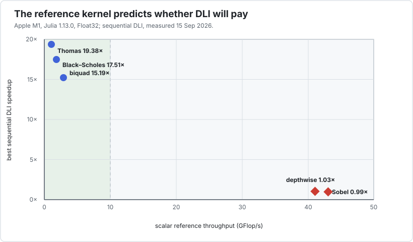

Benchmark applications
The benchmark suite is not a gallery of victories. It is a controlled experiment: the recurrence kernels expose the dependency Interleave targets, while stencils and reductions show where ordinary compiler SIMD is already a strong baseline.
| application | dependency inside one instance | ordinary reference | best Interleave configuration | conclusion |
|---|---|---|---|---|
| Thomas tridiagonal solve | forward and backward recurrences | 1.1 GFlop/s | P=32, 19.38× | strong fit |
| IIR biquad bank | two-sample feedback state | 2.9 GFlop/s | P=16, 15.19× | strong fit |
| Black–Scholes Crank–Nicolson | time loop containing a Thomas solve | 1.8 GFlop/s | P=32, 17.51× | strong fit |
| Depthwise 3×3 convolution | none between output pixels | 41.1 GFlop/s | P=1, 1.03× | keep ordinary SIMD |
| Sobel plus motion | none between output pixels | 43.1 GFlop/s | P=1, 0.99× | packing is not the gain |
| Per-instance reductions | reduction within each instance | control case | measured P | compare against ordinary compiler SIMD |

The useful discriminator is not “finance versus audio versus images.” It is whether the ordinary inner loop has a loop-carried dependency. The three slow references cannot use their natural iteration axis for SIMD, so Interleave uses independent instances instead. The two fast references already give LLVM a regular spatial loop; changing the SIMD direction merely replaces working vectorization with a less favourable one.
How these numbers were produced
All tables in this section are one local measurement, recorded on 15 September 2026:
| item | value |
|---|---|
| CPU | Apple M1, 128-bit NEON |
| Julia | 1.13.0 |
| arithmetic | Float32 |
| Julia threads | 10 |
| packet sizes | P ∈ (1, 2, 4, 8, 16, 32) |
| timing engine | BenchmarkTools.jl, one interpolated sample per variant and round |
| timing protocol | warm every variant, then five interleaved rounds; report the minimum |
The scalar reference, all sequential packet sizes, and all threaded packet sizes are run in every round. Throughput uses the operation counts documented in bench/; it is an estimate, not a hardware-counter measurement. Machine load is printed beside every result and should be retained whenever the measurements are published.
Two comparisons answer different questions:
- compare
P>1sequentially with the scalar reference to isolate the DLI idea; - compare threaded
P>1with threadedP=1to estimate what packing adds after task parallelism is already present.
The “threaded versus scalar reference” column deliberately combines both effects. It is an end-to-end result, not evidence that SIMD and thread gains multiply independently.
Run the same suite from the package environment with:
julia --project=bench -t auto bench/runall.jlRun it on an otherwise quiet machine and keep the printed load average with the results. The harness uses BenchmarkTools.jl, checks the generated LLVM for the sequential Thomas, biquad, and depthwise packet kernels, and keeps every case behind a function barrier. Correctness and allocation checks remain in the test suite rather than being inferred from timings.
Read the suite as a decision tool
- Start with the ordinary
Base.Arraypath and measure it. - Locate the dependency, if there is one.
- Sweep
P; do not equate it with the hardware vector width. - Add task parallelism only after understanding the sequential result.
- Include layout conversion in an application-level measurement.
The case studies show each step with the actual benchmark kernel. For a cross-cutting comparison with compiler vectorization, explicit SIMD, loop transformers, domain libraries, and GPUs, see Positioning and alternatives.